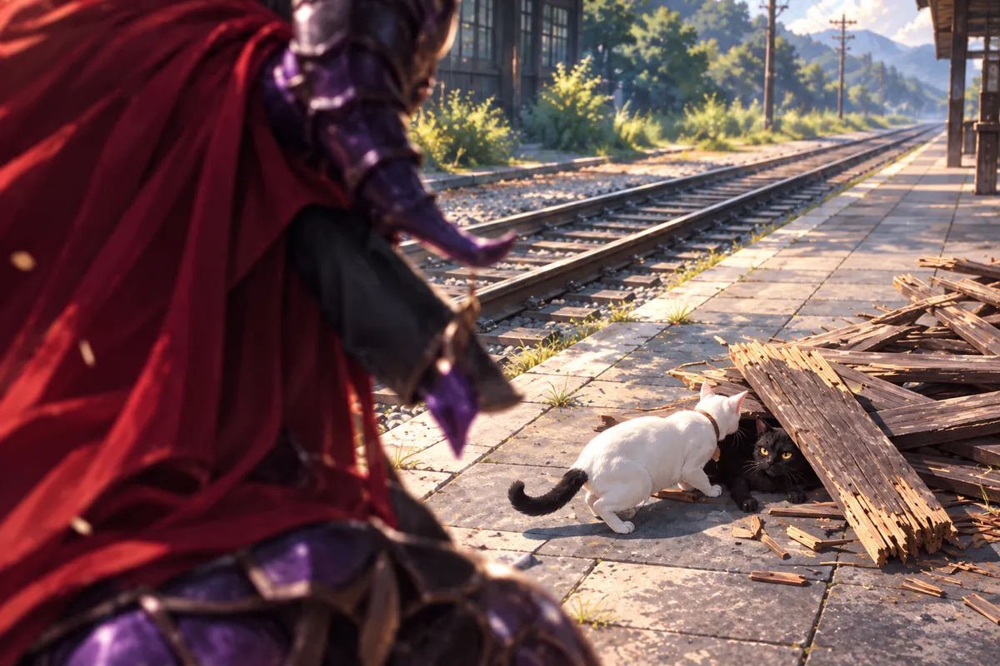

鼠軍師騎粉紅三輪車進會議室，代替口才不好的魔王解釋。
憤怒王國抓靈魂獻祭。每一個，能召出骷髏兵；品質越高，召出的兵越強。
房裡的人原本在等一套魔界才懂的術式，鼠軍師將規則講得很直接，反而讓事情更難輕輕帶過。街上被扛走的每一個靈魂，都可能在下一次回來時，成了替敵人戰鬥的兵。
阿志想到狐姬，想到方才對方那句高品質。原來那不是隨口選了個侮辱人的稱呼，而是有一套真能照著換算的殘酷。
月老問下去，沒有讓這份解釋只停在魔界習俗。既然三途川已被選中，就得知道為什麼是這裡，還有多少人可能被抓。
鼠軍師在三輪車上坐穩，抬起頭。他外表小，講到軍務卻沒有像利維坦那樣讓人替自己接話，每一個判斷都指向下一個必須確認的問題。
月老問為什麼挑三途川。
位面差很遠，撒旦不值得為這座小城付如此大的代價。軍師猜，城裡有人開門邀請。
他一邊分析，一邊要小兵看好三輪車，丟了就打斷腿。千里眼沒有理會這段交代，追問撒旦究竟多強。
軍師說，眼前三位一起上，也走不過百招。
千里眼沒有笑，也沒有因為說話的是一隻坐三輪車的鼠，便認為這句話是在誇大。月老往阿志那邊看，對方也在聽。
他們各自知道自己能做到哪裡，卻沒有人比這位來自魔界的軍師更熟悉撒旦。若為了面子先反駁，到了街上才發現判斷錯了，付代價的便不只站在會議室的三個人。
鼠軍師說完，房裡靜了一下。他沒有趁勢再嚇人，只等他們決定還要問哪一項。
就在那時，門口傳來另一個聲音。阿志與月老轉過去，千里眼也跟著，方才壓在桌上的難題沒有消失，至少有人能將新的力量帶進這場商量。
「那加上我呢？」

觀音走進來。
鼠軍師仰頭，看見強大的女神，也看見她伸來摸頭的手。一時之間，軍事判斷與受寵若驚擠在一起，連眼睛都亮了。
三位男神恭敬行禮。
軍師看那個動作，才重新衡量眼前的女神。剛才伸來摸頭的手很輕，三個方才還能嚴肅問戰事的人，卻都肯在她面前收好姿態。
他本來能講得很流利，此刻一面看她，一面又怕自己坐得不夠端正，連握住三輪車把手的動作都比先前安分。
觀音沒有催他立刻證明是多厲害的軍師。她來，是要知道城裡的危險與能用的辦法，不是讓一個已經在解釋的人重新受一場考。
鼠軍師慢慢把心神收回。會議室外仍有人奔走，方才可供玩笑的幾句很快過去。他抬頭看月老，再將第三王國的事講清，像終於找回自己被請來此地真正要做的工作。
他望望這邊，又望望那邊，猜她大概就是這裡的王。
會議氣氛稍鬆，提到的敵人卻仍壓在每個人心上。月老問起城防。鼠軍師這才坐直，把第三王國的兵力逐一說明。
七號重新演戲後，又夢見排練室。
二號扮警察，問扮混混的他是不是還在用毒。七號說沒有，老師卻嫌太像情侶吵架，像恨不得對方立刻發現。
真正的說謊會顧左右而言他。
七號將方才那句沒有在心裡再過了一次。他想按角色否認，卻用了太像自己在對二號說話的口氣。搭檔也在等他看，兩個人的眼神一對，戲裡本該藏起來的事反而全送到了對方面前。
辜老師叫停，沒有讓他只改一個字便繼續。他先說人在怕什麼，再示範怎樣將別的原因推到前面，使提問的人不得不跟著轉。
七號認真看，連老師說到家裡沒人時怎麼移開視線，都記在動作裡。那時他相信，只要學得足夠細，便能將人心的每一處都慢慢弄懂。
二號站在旁邊，等示範完才回到原來的位置。她沒有嫌他學得慢，眼裡仍是願意陪著再演一次的耐心。
辜老師親自示範：怕遲到，家裡沒人，身上有腫瘤，說什麼都行，就是不碰問題本身。
七號看懂了，卻更想知道，什麼叫開心而哭。
老師讓二號想像，很久沒見他，某個平凡的日子，他忽然出現在街角。
她笑了，眼淚也掉下來，喊七號。
七號沒有立刻答，先看她的眼睛。老師只讓她想像一個平凡的街角，她卻像真的站到了那裡，找了很久的人就在面前，不必再辨認背影，也不必追上去才知道又看錯。
他原本以為哭需要難過，笑需要開心，兩種一起出現時，核心感受到的便不能只放進其中一格。
二號喊完，看他仍在想，笑意又多了一點。排練室裡沒有真正的街角，也沒有漫長的分離，可她看過來的那一眼，並沒有因為是在練戲就顯得全是假。
老師讓他們再走一遍。七號回到位置，記住她如何吸氣，如何叫自己的名字，卻不知道後來會在許多個不再有她的日子裡，反覆想起這個還沒學懂的回答。
現在，甜食屋裡，他記得那個聲音，仍不知道該把它放進開心還是難過。
老師曾說，人群像陽光，需要，卻討厭浸在其中。成功以後，表面讚美、背後陷害的虛偽，更像利刃。
所以他喜歡戲。那一小段時間，可以與觀眾相信同一份美好。
老師說這些時，沒有正在教一個角色該怎樣站。他坐著，將臺外的人群講成一種難以靠得太近、又無法完全離開的存在。
七號在旁聽，二號也在。有些話他們能理解，有些只是先記下；演出成功以後要怎樣面對別人的臉，並不是老師示範一次，孩子就能學會的事。
七號如今再想，仍記得老師談到戲時眼裡那點光。後來發生的事讓他痛，卻不能將從前每一次認真教過的片刻，都直接改成不曾存在。
陰曼叫他，他才從回憶裡回來。盤子還握在手中，熟悉的甜香就在旁邊。他把抹布收起，先回應眼前的人，夢裡那聲七號卻還留在沒有辦法完全回答的地方。
保全撕掉《梁祝》海報，罵魂偶醜。
辜老師從背後出聲。接著，紅光毀了那座屋子。
如今，他又撿到七號重新登臺的傳單。孩子竟還在演。
「心軟了？」魔物問。
辜老師握緊彩色核心。
「已經沒有退路了。」
傳單上寫著新的演出，紙角因被撿起而折了一點。辜老師看著，像先認出名字，才看見那件自己以為已經不會再發生的事。
七號還能站上臺，還有別人願意一同演。那份往前並沒有替老師留一個理所當然可以回去的位置，反而將他已做過的事照得更清楚。
辜老師沒有把傳單交出去。彩色核心硌在掌心，他握得更緊，眼睛仍停在紙上。承認後悔，便得承認那些孩子是被自己親手帶走的。
紙仍在，他卻不再看。門即將開啟，毀壞世界這個決定，被他用來擋住了任何需要回頭的可能。
穿界門開啟，撒旦率軍降臨。觀音出境找援軍，正是空隙；拒神結界立刻設下，把能回防的神攔在外頭。
城裡，月老與老闆察覺兩股魔氣。千里眼去車站，他們去市中心。
市役所前，靈魂被塞進囚車。
有人抓住邊緣，還沒將名字喊完，手就被扯開。囚車裡擠著的不是一群可以隨意搬走的貨物，有的方才還在買東西，有的正要回家，眼前的人卻不問，只要往裡塞。
月老看見紅線晃動，收住心神。街上的慌亂若只能讓他跟著急，便少一個能出手的人。阿志在旁停下，先看囚車，再看站在前面的撒旦。
兩人沒有急著將全部力量放到對方身上。誰若先救，誰去牽制，必須在一眼之間懂，不能讓車裡的人替他們等一場談完的部署。
有人看見阿志，喊老闆。那聲熟悉的稱呼到了這種地方，反而比任何呼救都讓他不敢往後退。他開店時能給人留一張椅子，此刻也得試著將人從車裡帶回地面。
老闆看清撒旦，判斷雖強，還能制服。對方卻笑，平常得束住魔力，否則身旁的人承受不住。
束縛鬆開。
壓力落下，月老的目光變了。老闆仍站住，說再強，也不能把生靈當垃圾。
方才那份能制服的判斷被魔力推翻，阿志感到身子承受的力道，知道眼前還不是敵人的全部。撒旦沒有急著進攻，像等他們先自己承認差得太遠。
月老的手指動了動，將紅線重新扣好。這裡不是可以只看對方強弱再決定要不要接的差事，後面的囚車還在響，人也還在裡面。
阿志說話時，氣息沒有方才那麼松，意思卻沒退。他不能因為撒旦確實強，就接受那些被抓的人該被怎樣對待。
月老看向他，見他仍站在原地，才往另一側移。兩人要找的已不只是贏的一擊，還是怎樣在每一次承受之間，替車裡的人爭出一點能夠離開的空間。
撒旦掃過四周，把所有人一併貶低。
月老收緊紅線。囚車裡有人哭著拍門。他與老闆對望一眼，往撒旦兩側分開。
觀音按住結界，確認它只擋神明。
她請鼠軍師進城守護，事後吃頂王。
結界隔在面前，觀音試過，沒有硬把眼前的人一起拖進更多混亂。它擋神，卻不擋同在此處的軍師，這一項規則便是現在還能用的路。
鼠軍師先看城內。他知道撒旦的軍隊如何抓人，也知道拖得越久，能召出的兵只會更多。女神開口請，他又抬頭看她，原本嚴肅的臉忽然藏不住另一種期待。
「就我跟妳？」他問。
「火鍋？」觀音看著他，想了一下，「鴛鴦鍋。」
「可以一起吃？」
「我吃素，你吃葷。分開就好。」
對方低頭看看，又抬眼，像這麼簡單的安排反而沒有想過。
觀音笑了笑。「不用為了陪我，把你那一邊也改了。」
「那我點了。」
「點吧。坐下慢慢吃。」
這段很短的對話裡，城外的人找到一位能進去支援的人，軍師則找到一句足以讓自己立刻握緊車把的約定。粉紅三輪車向前，結界沒有再把他攔住。
鼠軍師踩快了，嘴裡已喊豆腐鴨血、冰水一壺。
麻將拳接連打飛骷髏。他開出利維坦的穿界門，召第二王國戰士支援，聲勢一下子填滿街道。
車站卻已成殘骸。
原本供人等車的地方散了，熟悉的方向被碎石與斷裂的物件遮住。想找同伴的人只能在殘骸間一個名字一個名字叫，聲音到了遠處，又被別的響動蓋過。
白貓挨著黑貓，身子很低。牠不是不知道可以跑，目光已經看過能離開的方向，最後還是回到那個受傷的身子旁邊。

黑貓動了動，沒能站起來。白貓靠過去，像只要自己先不走，對方就不用獨自留在這塊再也不像車站的地方。
瘟疫看見牠們，步子沒有因為靈魂小便停。千里眼來到時，先看清牠們的位置，才將身子擋進那道逼近的視線。車站已經壞了，仍得讓留在這裡的生命有機會從瓦礫裡出去。
「先走。」千里眼讓兩隻貓退。
一隻扶著另一隻往後退，碎石在腳下滑動。將軍沒有回頭，只站在牠們與敵人之間。
貓的動作不快，千里眼聽見身後細碎的聲音，沒有因此催得更急。若他此刻轉身去看，眼前的敵人便多一個可以越過的空隙。
瘟疫的腔調很輕，報完名字便問他。他沒有因為那個問題，就跟著把這一場當成普通的相識。握住戰姿時，先讓腳下站穩，碎石從鞋邊滾開。
遠處的支援聲傳過來，說明城裡還沒有只剩他們。只是每條街要守的都不同，眼前這兩隻小貓，不能等別人打完一場才決定能不能活著離開。
千里眼看著對方，等牠們再退一些。貓彼此扶持的身影沒有很大，也沒有說出一句人聽得懂的承諾，他卻已看見，身後有一份不肯放手的心意值得自己多站一會兒。
遠處有鼠軍師的叫喊，眼前有已逼近的魔力。這座城裡，每一個還能站著的人，都得替身後的人多留一點路。
撒旦掐住老闆，說一個人就足以包圍他們。
冰牆卻忽然升起。
寒氣截進兩人之間，將撒旦方才毫不費力的壓制推開。阿志得以呼吸，身子卻還沒能立刻跟著站穩。
月老靠近，先接住他，眼睛仍看戰場。利維坦來了，不等於身後那些傷者能自己離開，他們得趁這個空隙把人帶走，不能等魔王打完再回頭。
阿志想說什麼，氣息先卡住。月老讓他慢一點，手臂託得更穩。方才兩人對望便分開的默契，如今又用在怎麼退到不會妨礙下一擊的位置。
利維坦站上前，沒有往傷者那邊多看。背後有人接手，他便能將目光完全放到撒旦身上。這道冰牆不是一個只讓人驚訝的登場，至少先替被掐住的人，爭回了一口還能繼續活的氣。
利維坦把傷者交到月老手裡。
「語彤在劇場。這裡交給我。」
撒旦望著他。「你變強了。」
「因為愛。」利維坦抬起頭，「還有，這裡的書教會了我無上戰技。」
所謂戰技，先從對轟站哪邊說起。
撒旦看著他，顯然沒料到會聽見這樣的解釋。書裡對轟的站位，在利維坦口中竟如一項足以改變勝負的知識，說得比剛才任何挑釁都認真。
月老在遠處聽見，沒有空笑。他帶著傷者退，仍得看下一道攻擊會往哪裡落。魔王從漫畫學來的東西是否真的有用，現在便要拿街上的人命驗證。
利維坦抬手，冰勢推開，火光迎上。兩種力量撞在一起，蒸汽裡看不清身影，地面卻仍能感到力道從哪一邊壓來。
撒旦喊聲更大。利維坦沒有因為對方咆哮便停下自己的安排。他要守住的地方已在身後，女兒在劇場，狐姬也在這座城裡，這次不必再由誰提醒他為什麼出手。
蒸汽上方，城裡出現一尊巨大的冰之狐姬。
真正的狐姬遠遠看見，尷尬得想死。諾瓦還在看七號的表演，語彤趕緊確認孩子沒有亂跑。
戰場上，利維坦擺出猜拳的手。
剪刀。石頭。還是石頭。
一拳轟出，撒旦倒飛。
地面的震動一路傳出去，遠處的人扶住身邊能抓的東西，才沒有跟著跌倒。蒸汽還沒散盡，利維坦收回手，目光先追向落點。
撒旦倒地之後那句問話，他聽得見，卻沒有急著拿來證明自己對愛已懂得多深。原先從人類學嫉妒，也曾讓他變強；如今學到的事多了，眼前確實出現一種他從前不曾用過的力量。
這些話可以晚些再說。利維坦望向劇場，先確認那個方向還在，才讓握緊的手慢慢放開。
高大的冰像沒有立即消失。狐姬還得面對自己被立到城上的模樣，尷尬從她捂臉的動作裡透出來。至少這一刻，旁邊的語彤又有了一點能夠笑的餘地。
拳勢挾著魔力打出去，地面隨之震動。敗者倒地，問這就是愛嗎，聲音裡剩下不甘。
利維坦收手，先望向劇場的方向。
冰像仍高高站著。狐姬捂住臉，語彤看看冰像，又看看她，忍了好一會兒，還是笑了出來。
陰曼以金光指出辜老師。七號走近，問當初為什麼不連自己帶走。
「捨不得。」老師答。
七號盯著他。
「你是我最好的作品。」
那句話聽來像稱讚，老師接著說的卻是：「不值得給人類欣賞。」
七號站得很近，沒有因為捨不得三字便往前。老師曾教他怎麼分辨一句話後面沒說的事，此刻卻用一個聽來像珍惜的理由，替那天的缺席作答。
他想到二號最後的聲音，想到工作室裡一具具被掏空的身子。若老師真的捨不得，其他孩子又該將自己的名字放在哪裡。
七號說不出謝謝。老師留住了他，其他六個卻再也不能說話。他想問的是為什麼只剩自己，老師給的答案，卻只是自己做得最好。
紅線纏過來，老師的手不能再自由動。周圍的人準備審問，七號仍看著他，像等那個曾經能將角色講得清楚的人，終於肯說一句不再繞開的話。
紅線纏住他，審訊卻尚未開始，核心已吸足恐懼之力。
爆炸讓神力失效，眾人被掀倒。
陰曼伏在地上，記憶的鎖忽然開了。眼前的人與兩千年前重疊，她抬頭，喊岳夏澤。
月老看著她，竟先笑了。
那聲岳夏澤穿過方才的轟響，到了他耳裡。陰曼不再只是看一位常來吃甜點的年輕神，她看見的是曾經站在馬旁、讓她叫自己的名字的人。
月老原本一直留在不能靠近的距離，笑也收得很小。此刻聽見她喊，竟沒有先算將帶來多少壞的命運，也沒有先想該如何請她再忘一次。
他看著她，眼裡那點喜悅快得像藏了太久，終於找到一個不必向任何人解釋的出口。陰曼撐起身，想過來，周圍卻還有人倒著，危險也沒有因為兩人認出彼此就停。
辜老師手裡仍有核心。月老轉過頭，那個剛剛得回來的名字，忽然也成了眼前最難留下的事。
辜老師還有五顆核心，要毀掉三途川。月老沒有再等，借用古神詛咒，展開異界降臨。
慈花止兵戈。
花海把他與辜老師包進去，也隔開尚未落下的災難。
花從兩人之間展開，方才能看見的街道被一層層收住。語彤想往前，先看師父，像還在等他說只是換個地方，很快便回。
他沒有那樣保證。眼前的術不是為了讓一場戰鬥更好看，而是要把爆炸帶離這些仍在城裡的人。若等一個誰都能接受的辦法，核心就不會等。
陰曼的聲音傳來，他往她那邊望。她終於記得，終於能把那些年沒能問出口的話一起帶到這裡，他卻只來得及說甜點。
糯米糍的味道，他說過好吃，也吃過兩千年。如今再說一次，不是要她勿念。他看著她，想把還能交出去的真心說清，花已慢慢往兩人中間合上。
「陰曼，妳做的糯米糍，真的很好吃。」
她想往前，想問為何找到自己，卻不重新相愛。記憶才回來，眼前的人又要走。
花一層層閉合。
她喊他的名字，喊回來。月老最後看了她一眼。花海已經合攏，陰曼衝到近前，只碰到一片落下的花瓣。